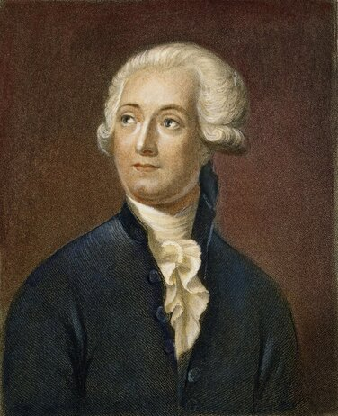

Антуан Лавуазье
Антуан Лоран Лавуазье (Antoine Laurent Lavoisier) — французский химик, которого называют «отцом современной химии». Его работы заложили основы для понимания закона сохранения массы, который гласит, что масса вещества в замкнутой системе остаётся постоянной, независимо от происходящих в ней процессов. Лавуазье также сыграл ключевую роль в опровержении теории флогистона и разработке новой химической номенклатуры.
Краткая биография Антуана Лавуазье
Антуан Лавуазье родился 26 августа 1743 года в Париже, в богатой семье. Он получил прекрасное образование, изучал право, математику, астрономию и химию. В 1768 году он стал членом Французской академии наук, а позже — одним из самых влиятельных учёных своего времени. Лавуазье провёл серию тщательных экспериментов, которые опровергли теорию флогистона, популярную в то время. Он доказал, что горение — это процесс взаимодействия веществ с кислородом, а не выделение некой мифической субстанции. В 1777 году он сформулировал кислородную теорию горения, которая стала основой для понимания химических реакций. В 1789 году Лавуазье опубликовал свой знаменитый труд «Элементарный трактат по химии», где впервые чётко сформулировал закон сохранения массы. Он показал, что в химических реакциях масса веществ до и после реакции остаётся неизменной. Это открытие стало одним из краеугольных камней современной химии. Помимо научной деятельности, Лавуазье занимался общественной работой. Он участвовал в реформе налоговой системы Франции и был членом комиссии по разработке метрической системы. Однако его связь с ancien régime (старым режимом) привела к трагическому концу. Во время Великой французской революции Лавуазье был арестован по обвинению в коррупции. Несмотря на заслуги перед наукой, он был гильотинирован 8 мая 1794 года в Париже.